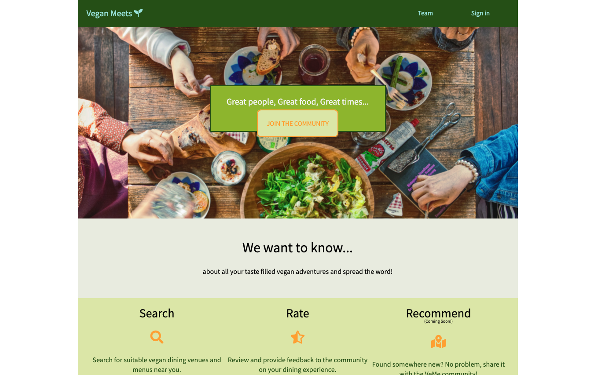

Taylor
Taylor is a non binary, non gender bot written to help us be aware of the non inclusive words we use on a daily basis. You can add Them to any channel, if a user uses any of the predefined words, the user will be sent a DM letting them know how many non inclusive words were used and what they were. I wrote Taylor's backend in Python with Flask-SQLAchlemy using Slack's Event API and WebClient. The frontend is written in basic HTML and CSS.Wildfire Watch
A cross platform application where a user in fire prone areas to be notified that there are wildfires near their saved location(s). The team included 4 Web Developers, 2 Data Scientists and 2 Android Developers working remotely across the US and India. We continued to work on the existing code base. While working on this iteration of the project, I cleaned up the UI, implemented a checklist to help users gather items when they need to evacuate. The team collaborated to add an Air Quality filter on the map.The technology used on this project includes React, Node, Firebase to name a few. Gained knowledge on how to use Cypress.io for automated testing.Contributed the following on this project:
- Manually tested the application on different devices;
- Designed and implemented the checklist;
- Investigated issues with geoJSON;
- Organized the team by hosting zooms;
- Created documentation on issues with the application before working on it;
- Generated user surveys;
- Discovered edge cases while manually testing across different platforms;
- Learned how to use Cypress.io for automated end to end testing;
Vegan Meets
This application lets users search for vegan restaurant information, menu items and user ratings. Only registered users can add restaurants to the database. The team was comprised of four remote frontend web developers, in different phases of the React curriculum and one backend developer. This was a project that required an API, database schema and tests to be built for the frontend React team. While creating this backend, it was great to also help support the frontend team as they built the React web app to be able to use it.
Implemented the following technologies:
- Created the server using Node.js and Express.
- Designed the table by using DBdesigner and SQLite.
- Wrote the authentication/authorization with bycrypt and JSON tokens.
- Tested the backend with Jest and Supertest.
- Composed the ReadMe documentation for the backend portion.